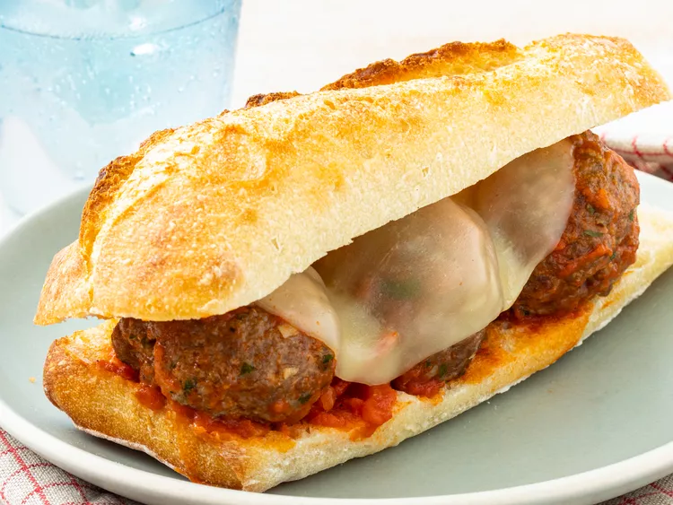

Meatball Sandwich

Description
Meatball sub made with deliciously seasoned homemade meatballs, tomato sauce, and melted
provolone cheese served on a lightly toasted baguette.
Ingredients
- 1 pound ground beef
- 3/4 cup bread curmbs
- 1 large egg, beaten
- 2 tablespoons grated Parmesan cheese
- 2 tablespoons chopped fresh parsley
- 2 cloves garlic, minced
- 2 teaspoons dried Italian seasoning
- 1 French baguette
- 1 tablespoon extra-virgin olive oil
- 1/2 teaspoon garlic powder
- 1 pinch salt, or to taste
- 1 (14 ounce) jar spaghetti sauce
- 4 slices provolone cheese
Steps
- Preheat the oven to 350 degrees F (175 degrees C).
- Combine ground beef, bread crumbs, egg Parmesan cheese, parsley, garlic, and Italian seasoning in a large bowl;
mix with your hands until well combined.
Shape mixture into 12 meatballs; place in a baking dish.
- Bake in the preheated oven until meatballs are cooked through, 15 to 20 minutes.
An instant-read thermometer
inserted into the centers should read at 160 degrees F (71 degrees C).
- Meanwhile, cut baguette in half lengthwise; open like a book. Remove and discard some of the bread from the inside
to make a well for the meatballs.
- Brush baguette with olive oil; season with garlic powder and salt. Place baguette on a baking sheet, opened, oiled-sides up.
- When meatballs have 5 minutes cooking time left, place baguette in the oven until lightly toasted.
- Meanwhile, warm spaghetti sauce in a saucepan over medium heat.
- Remove meatballs from the oven. Transfer meatballs to the sauce using a slotted spoon; stir gently to coat with sauce.
- Spoon meatballs and sauce into one side of baguette, nesting meatballs in the well; top with provolone cheese.
- Bake in the oven until cheese is melted, 2 to 3 minutes.
- Cool slightly, then cut into 4 sandwiches.